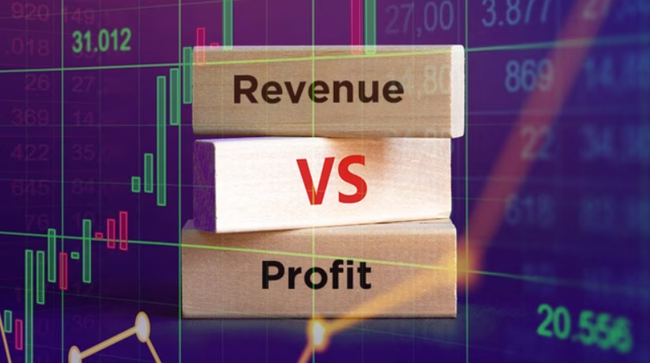
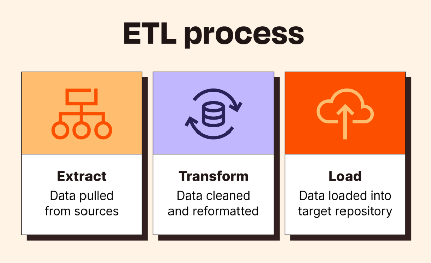
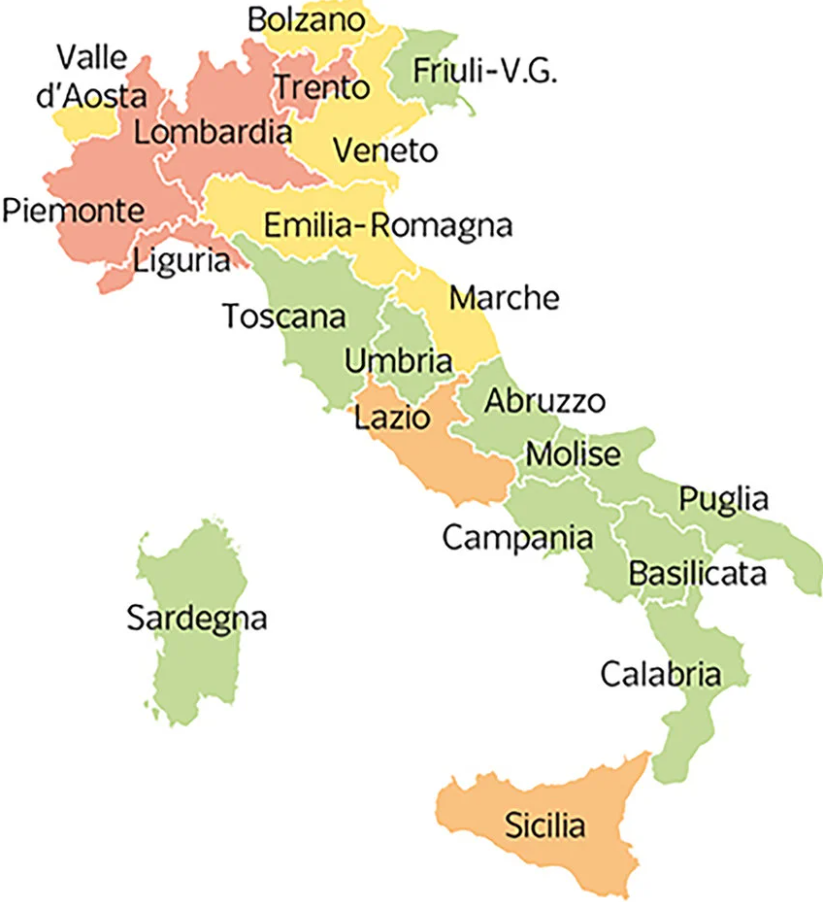
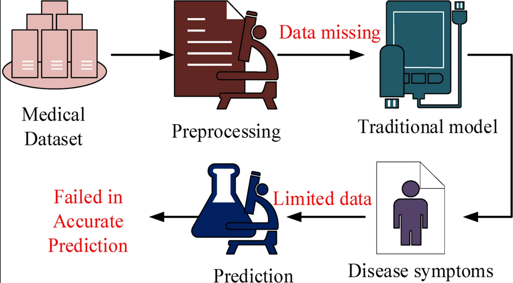
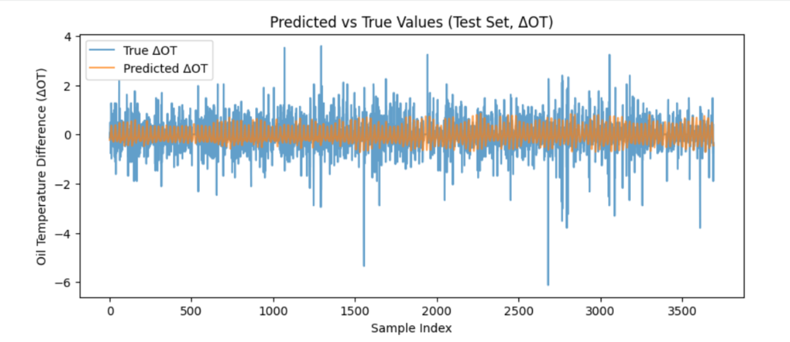
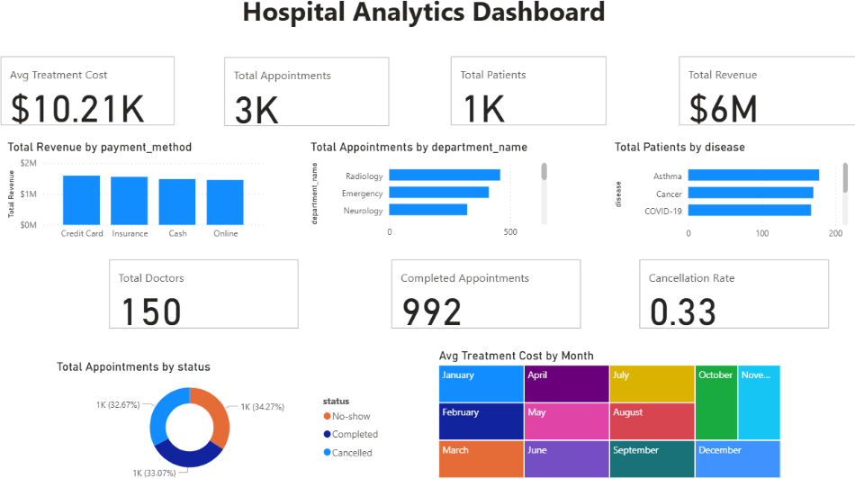

Data Analysis
Clean, analyze, and interpret data to identify trends, patterns, and actionable business insights.
Clean, analyze, and interpret data to identify trends, patterns, and actionable business insights.
Write SQL queries, work with relational databases, and organize data for reporting and analysis.
Build dashboards and KPI reports using Power BI to support data-driven decision-making.
Develop predictive models using Python, Scikit-Learn, and TensorFlow for classification and forecasting tasks.
Completed graduate studies focused on data analytics, statistical analysis, machine learning, database systems, data mining, forecasting, and business intelligence. Built hands-on projects involving sales analytics, customer analytics, public health forecasting, and predictive modeling.
Supported analytics and reporting workflows by developing SQL-based data solutions, cleaning and validating 10,000+ records, and creating interactive Power BI dashboards. Worked with product, customer, and operational data to help business teams monitor KPIs, identify trends, and reduce manual reporting effort.
Built end-to-end analytics projects using Python, SQL, Power BI, Tableau, and machine learning tools. Projects include Sales Revenue Analytics, E-Commerce Customer Analytics ETL, COVID-19 Regional Forecasting, Diabetes Risk Prediction, Time Series Forecasting of Energy Metrics, and Power BI dashboard development.
Developed a strong technical foundation in programming, databases, algorithms, software development, and analytical problem-solving. This background helped build the base for transitioning into data analytics, business intelligence, and machine learning.
My favorite part of analytics is uncovering patterns hidden within data and transforming them into meaningful stories that support better decisions. I enjoy combining analytical thinking, visualization, and business context to turn complex datasets into actionable insights.
Python (NumPy, Pandas, Matplotlib, Scikit-Learn), SQL, R Programming
EDA, Statistical Analysis, Statistical Modelling, Hypothesis Testing, Trend Analysis, Data Cleaning, Data Validation, Data Quality, KPI Analysis, Stakeholder Reporting, Time Series Forecasting, ETL Pipelines
Power BI (DAX, Power Query, KPI Dashboards), Tableau, Excel (Pivot Tables, XLOOKUP, Advanced Analysis), Looker
MySQL, Microsoft SQL Server, Relational Database Design
GitHub, Jupyter Notebook, Google Colab
Supervised Learning, Unsupervised Learning, Model Evaluation, Predictive Analytics

Retail organizations often generate significant revenue while struggling to understand the factors driving profitability across products and categories. This project focused on analyzing retail transaction data to identify revenue drivers, profitability gaps, and the impact of discounting strategies on business performance. Using Python, SQL, Tableau, and Power BI, I developed an end-to-end analytics workflow that transformed raw sales data into actionable business insights. The analysis covered 9,994 transactions representing approximately $2.3 million in revenue. Through exploratory data analysis, profitability modeling, and dashboard development, I identified Technology as the highest-profit category ($145K), Tables as the largest loss contributor (-$17.7K), and discounts above 30% as a significant margin risk across product lines. The project culminated in interactive dashboards and stakeholder-ready reports that provided recommendations for optimizing discount strategies, product mix, and revenue performance.

Modern e-commerce businesses rely on integrated data pipelines and customer analytics to improve customer experience, operational efficiency, and retention. This project involved building an end-to-end ETL and analytics solution using the Olist e-commerce dataset, integrating multiple relational datasets into a unified reporting layer for comprehensive business analysis. Using Python, SQL, Pandas, NumPy, and Power BI, I consolidated six relational tables containing approximately 98,666 orders and $15.84 million in revenue. The project focused on customer behavior, delivery performance, logistics efficiency, and customer satisfaction. Through statistical analysis and KPI development, I discovered that longer delivery times were strongly associated with lower review scores and that freight costs were disproportionately high in several key states. The resulting dashboards and analytical reports provided data-driven recommendations to improve logistics performance, customer satisfaction, and operational decision-making.

Public health organizations depend on accurate forecasting models to anticipate healthcare demand and allocate resources effectively. This project developed a comprehensive time-series forecasting pipeline using regional COVID-19 epidemiological data from Lombardia, Italy, to predict future case trends and support data-driven planning. The solution evaluated and compared multiple forecasting approaches, including Naive Baseline, SARIMA, and Random Forest models using Python, Pandas, Scikit-learn, and statistical forecasting techniques. Through rigorous model evaluation and validation, SARIMA achieved the strongest forecasting performance with a Mean Absolute Error (MAE) of 180 compared to 206 for the baseline model. Beyond model development, the project identified and corrected a critical evaluation flaw through statistical validation and data integrity checks, ensuring research-grade analytical accuracy. The final outcome provided actionable forecasting insights that could support regional health authorities in resource planning and operational preparedness.

Focusing on the need for early diabetes risk detection, this project applied supervised machine learning to classify diabetes risk using routine patient health indicators such as age, gender, BMI, glucose level, blood pressure, insulin, HbA1c level, and smoking history. The goal was to compare multiple models and identify which approach could most effectively support early risk screening using structured healthcare data. Developed in Python with Pandas, NumPy, Matplotlib, Seaborn, Scikit-Learn, TensorFlow, and Keras, the workflow included data loading, exploratory data analysis, preprocessing, categorical encoding, feature scaling, feature engineering, model training, and performance evaluation. Four models were implemented and compared: Logistic Regression, Support Vector Machine, Random Forest Classifier, and a Neural Network. The Neural Network achieved the strongest overall performance with 97.14% accuracy and 0.9764 AUC-ROC, while Random Forest performed closely and offered better interpretability. The project also highlighted the importance of evaluating recall in healthcare contexts, since missing actual diabetic patients can be more costly than false positives. This solution demonstrates how machine learning can support clinical decision-making by helping flag high-risk patients for further testing.

Addressing the challenges of forecasting energy system behavior, this project focused on predicting electricity transformer oil temperature using the ETTh1 benchmark dataset, a real-world multivariate time-series dataset with hourly readings, trend, seasonality, and non-stationarity. The objective was to evaluate how effectively deep learning models could capture temporal patterns and whether complex architectures always outperform simpler forecasting approaches. Implemented in Python using Pandas, NumPy, Matplotlib, Seaborn, TensorFlow, and Keras, the project involved exploratory data analysis, stationarity testing, time-based feature engineering, cyclical encoding, differencing, and time-aware train-validation-test splitting to prevent data leakage. Six forecasting models were developed and compared, including Naive Baseline, LSTM, GRU, Conv1D, Dilated Conv1D, and Seq2Seq Encoder-Decoder models. The analysis revealed that proper data preparation, especially handling non-stationarity through differencing, had a stronger impact on forecasting performance than model complexity alone. This project demonstrates a disciplined end-to-end forecasting workflow applicable to energy analytics, predictive maintenance, operational monitoring, and other multivariate time-series domains.

To support better visibility into hospital operations, this project involved building an interactive Power BI dashboard focused on patient volume, appointment efficiency, revenue patterns, and operational performance. The dashboard was designed to help hospital administrators monitor key healthcare metrics, identify high-load departments, understand financial trends, and evaluate appointment outcomes. Using hospital-related datasets including patients, doctors, departments, appointments, billing, and medical records, the project transformed operational data into a clear business intelligence solution. Key metrics included total patients, total appointments, total revenue, cancellation rate, and average treatment cost. Visual insights were created to show appointment distribution by department, revenue by payment method, appointment status, and disease distribution. Developed using Power BI Desktop and DAX functions such as CALCULATE, SUM, SUMX, DIVIDE, and DISTINCTCOUNT, this dashboard demonstrates how healthcare data can be converted into actionable insights for administrative planning, workload monitoring, and performance improvement.